Audio Discs brennen:
Burn kann die am meisten verbreiteten Audio CD´s
brennen. Aber auch MP3 CD´s. Die meisten neueren Geräte
können MP3 CD´s abspielen. Audio CD´s können
ausschließlich auf CD´s gebrannt werden. MP3 Discs
können auf jede Disc gebrannt werden. Burn kann u. A. auch das
nicht so weit verbreitete DVD-Audio-Format brennen. Manche Standalone
DVD-Player sind in der Lage dieses Format zu verarbeiten. Diese Disc
kann Musik in einer sehr hohen Qualität enthalten. Die direkte
unterstützten Dateiformate sind "wav" und "flac".
Audio-CD´s brennen:
1 Wähle Audio-CD
Wähle Audio-CD im Popup.
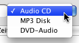
2 Wähle einige
Audio-Dateien
Wähle einige quicktimekompatiblen Dateien (es können auch
Video-Dateien sein. Dort wird dann aber nur die Audio-Spur benutzt)
Hinweis: Geschützte Audio-CD´s werden nicht unterstützt.
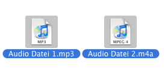
3 Wirf sie in die Liste
Wirf die ausgewählten Dateien in die Liste. Burn
überprüft dann ob sie benutzt werden können.
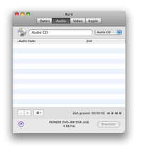 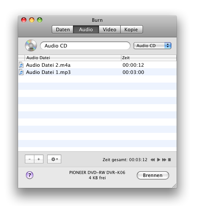
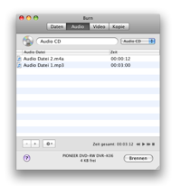
4 Klicke auf "Burn"
Es erscheint ein Dialog-Fenster.

5 Wähle "Optionen"
Wähle die Optionen für die Brennsitzung. Für mehr
Einstellungen siehe die "Einstellungen" unter dem Burn-Menu.
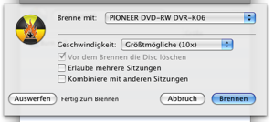
6 Brennen der Disc
Nun drücke auf "Burn" um die Disc zu brennen.

7 Burn
wird nun die Disc brennen
Während des Brennens wird ein Dialog angezeigt der über den
aktuellen Brennstatus Auskunft gibt.
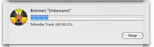
MP3 und DVD-Audio Discs brennen:
1 Wähle MP3 Disc
oder DVD-Audio
Wähle MP3 Disc oder DVD-Audio im Dialogfenster
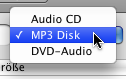
2 Wähle einige
Audio-Dateien
Wähle einige Audio- und Videodateien. Die meisten Formate werden
unterstützt Hinweis: Geschützte Audio-CD´s werden nicht
unterstützt.
3 MP3 und DVD-Audio
Discs brennen
Wirf die ausgewählten Dateien in die Liste. Burn
überprüft dann ob sie benutzt werden können. Falls Burn
die Dateien nicht verwenden kann wird es fragen ob sie konvertiert
werden sollen.
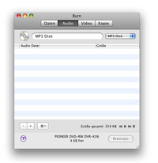 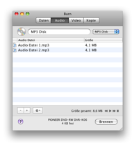
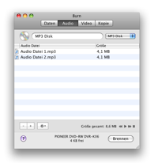
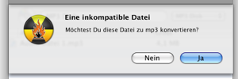
4 Klicke auf "Burn"
Es erscheint ein Dialog-Fenster.
5 Wähle "Optionen"
Wähle die Optionen für die Brennsitzung. Für mehr
Einstellungen siehe die "Einstellungen" unter dem Burn-Menu.
6 Brennen der Disc
Nun drücke auf "Burn" um die Disc zu brennen.
7 Burn
wird nun die Disc brennen
Während des Brennens wird ein Dialog angezeigt der über den
aktuellen Brennstatus Auskunft gibt.